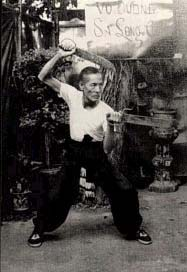
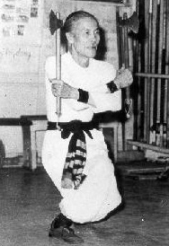
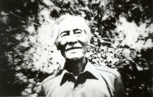

|
|
Le Grand-Maître TRƯƠNG-THANH-ÐĂNG
|
Le moine du temple Bouddhiste Dharma
Le Roi QUANG-TRUNG Nguyên-Huê
|

|
Maître - Fondateur TRUONG-THANH-DANG
et La Discipline Bình-Dinh SA-LONG-CUONG
|
|
Maître Fondateur Truong-Thanh-Dang était né en 1895 à Bình-Thuân, Phan-Thiêt. Depuis
son enfance, il était passionné des arts martiaux. Son arrière grand-père avait enseigné cette discipline aux
licenciés en arts martiaux sous le règne des rois de la dynastie Nguyên.
 A 14 ans (en 1909), avec l'autorisation de ses parents, il était allé à Tây Son,
berceau des arts martiaux, pour apprendre la quintessence des arts martiaux traditionnels, synthèse des expériences
de combats du peuple Viêt dans les luttes contre les occupations étrangères et pour la défense de ses frontières.
A 14 ans (en 1909), avec l'autorisation de ses parents, il était allé à Tây Son,
berceau des arts martiaux, pour apprendre la quintessence des arts martiaux traditionnels, synthèse des expériences
de combats du peuple Viêt dans les luttes contre les occupations étrangères et pour la défense de ses frontières.
A Bình Dinh, Truong- Thanh- Dang s'était instruit auprès des maîtres connus de la
région : Maître Truong Trach à Phù My, licencié en arts martiaux de la royauté de l'époque ; Maître Hai Cut à Câm Thuong,
Maître Dinh Cat à An Nhon, et d'autres maîtres des villages An Vinh et An Thai.
Parallèlement à l'enseignement, il faisait des recherches. Avec l'esprit de synthèse,
il arrivait à créer un programme de formation adéquat qui, allant du niveau élémentaire au niveau supérieur, servait
de base pour les futures inventions et créations. Parmi ses créations, on lui devait un livre complet des mouvements
de base nécessaire à tout disciple des arts martiaux traditionnels du VN et notamment le ''Bat'Bô Chân Quyên'' propre
à l'école Bình Dinh SLC.

En plus de son perfectionnement sous la direction des maîtres renommés, il procédait
à des échanges et des recherches avec ses amis tels que Doàn Phong, Hai Cuu, Muòi Dâu, Nam Tuòng
avec l'espoir
d'assimiler le précieux patrimoine des arts martiaux. Et après plus de 15 ans d'efforts acharnés à Tây Son, terre
sacrée des arts martiaux, Truong Thanh Dang avait assimilé et possédé à fond l'esprit des arts martiaux traditionnels
du VN.
Pendant ce temps, n'ayant pas limité ses connaissances aux arts martiaux traditionnels
du VN à Bình Dinh, il s'était perfectionné auprès de Maître Vinh Phuc, un personnage célèbre pour ses connaissances
de Shaolin. Au retour à son pays natal, Phan Thiêt, il avait appris, auprès de 2 maîtres chinois, originaires de
Phuoc Kiên et He (Chine), les matières "Am khi", "Cuu Liên Hoàn" et spécialement "Tu môn Chuong quyên phap"
une des hautes techniques de la discipline du temple Shaolin.
A partir de 1925, il commençait à recevoir des élèves. A cette époque, le pays étant
sous la colonisation française, toute activité de l'art martial était interdite .Les cours et les entraînements
étaient clandestins ou dispensés dans un cercle fermé. Habituellement, il n'y avait que le maître et son disciple
au fond du jardin, à l'orée de la forêt ou au clair de la lune...

Le gouvernement colonial français de l'époque avait interdit l'enseignement, la promotion
et le développement des arts martiaux notamment les arts traditionnels du VN de peur que ces activités ne fussent un
germe pour les organisations patriotiques contre l'autorité coloniale.
Après 5 années d'activité à Phan Thiêt, il devait se rendre à Saigon, cherchant
l'opportunité de développer, de promouvoir cette discipline qu'il a héritée des générations passées et de la
transmettre aux générations futures. A Saigon, malgré ses grandes compétences et ses immenses connaissances, avec
modestie, il dispensait des cours à domicile, sans chercher à se faire connaître.
En 1964, à l'âge de 70 ans, Truong Thanh Dang avait officiellement présenté son école
à Saigon sous le nom "Ecole Bình Dinh Sa Long Cuong", spécialisée dans l'enseignement des Arts Martiaux Traditionnels
du VN et de Shaolin de Chine.
Sa-Long-Cuong était le surnom du Maître Fondateur Truong Thanh Dang depuis son jeune
âge avec la signification "Le Dragon blotti dans les dunes". Les longues dunes longeant la région côtière étaient le
reflet de la province Phan Thiêt ( Bình Thuân ). Né et grandi sur cette terre, toujours se rappelant qu'on était
"descendant du dragon et de la fée", il nourrissait l'espoir d'hériter et de pérenniser le précieux patrimoine du
peuple Viêt.
Les règlements de l'école étaient strictement définis avec l'esprit "D'abord apprendre
le respect, puis l'art martial". Il était toujours rappelé au disciple de l'école:
|
|
"Apprendre les arts martiaux implique le respect, la courtoisie, l'humilité dans la
conduite. Ne jamais utiliser la force et les talents pour servir les folies et les vaniteux
desseins".
|
|
|
|

Les arts martiaux traditionnels du Vietnam étaient l'essence de la culture du peuple,
la synthèse des expériences de lutte des ancêtres, durant plus de 4 mille ans dans le processus de création et de
protection de la patrie. L'étude et l'entraînement des arts martiaux traditionnels du Vietnam avaient un double
objectif: en premier lieu, hériter et pérenniser le patrimoine du peuple et ensuite améliorer la santé individuelle
et s'auto-défendre, en cas de nécessité, dans la vie sociale.
Maître Fondateur Truong-Thanh-Dang a strictement interdit aux disciples de lancer
des défis et d'accepter de relever les défis de n'importe qui et en n'importe quel cas. Par une volonté farouche et
un tempérament réaliste, par des entraînements acharnés du Fondateur, en un laps de temps, l'école de Bình Dinh
Sa Long Cuong s'était fait une position estimable et solide dans la sphère des arts martiaux.
Et après 21 ans d'activité officielle et de promotion du patrimoine des arts martiaux
traditionnels du peuple, le Fondateur de la discipline Bình Dinh Sa-Long-Cuong était décédé le 17.09.85 (le 03 du
8ème mois de l'année At Suu), à l'âge de 91 ans, laissant de grandes peines à la famille, aux disciples et aux amis.
Le fils aîné du Grand Maître est le Grand Maître Adjoint Truong Ba Duong qui, avec
Maître Lê Van Vân, chef de l'école, continue la direction et le développement de la discipline. A nos jours, la
discipline Bình Dinh Sa-Long-Cuong s'est implantée dans plusieurs villes : Vung Tàu, Biên Hoà et dans d'autres pays:
La France, Le Canada, les Etats-Unis et L'Italie ...
Quel que soit l'endroit de l'activité, les caractéristiques du peuple Vietnamien se
sont toujours manifestées dans chaque mouvement, dans chaque style de combat (fouet, d'épée, de lance
) la vraie
nature de la discipline s'est toujours concrétisée d'une manière harmonieuse.
|
|